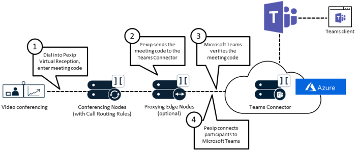

Use section #12 of the lab sheet.
Your trainer will explain the Teams Connector deployment procedure in Azure to the class, although this lab will
use a pre-deployed Connector. This Teams Connector will then be integrated with each students Pexip Infinity
deployment.
Refer to the documentation at https://docs.pexip.com/admin/teams_configuration.htm
for the Pexip Infinity setup.
NOTE: In this lab, we use a single Azure tenant and MS365 subscription for all groups. In the
real world, you would not use a shared single MS365 subscription across multiple Pexip
Infinity deployments. It is only possible to use one “Pexip” CVI provider per subscription (using
the New-CsVideoInteropServiceProvider Cmdlet), therefore we can only specify one set of
alternate instructions
(which will be pointing towards the trainer’s deployment). However, you will still be able to create a
Teams meeting and generate a meeting ID, so will be able to route calls through your lab deployment to this
meeting.
Setting up Pexip Infinity to act as a gateway to Teams
There are two ways you can configure Microsoft Teams gateway calls within Pexip Infinity:
- Routing indirectly via a Virtual Reception: here you configure Pexip Infinity to act
as an IVR gateway or "lobby" by configuring a Virtual Reception to capture the meeting code of the
required conference, then use a Call Routing Rule (typically the same rule as used for direct routing) to
route the call into the Teams conference.
- Routing directly via the Pexip Distributed Gateway: here you use one or more Call
Routing Rules to route incoming calls for specific alias patterns — that will typically include the
meeting code — directly into the relevant Teams conferences.
NOTE: The meeting code for a Teams meeting is between 9 and 12 digits long. As this code may
lead to dial plan clashes with other integrations, you should ensure that you use a prefix in this lab (for
example, teams.) in the alias matched in any call routing. In the real world, if you
only have one integration,
this may not matter.
Creating the Virtual Reception (lobby) for indirect dialling into a Teams meeting:

Here are some things to consider when configuring a Virtual Reception to allow for an indirect connection to a
Teams meeting:
- What Virtual Reception type should you use?
- What lookup location should you use?
- What aliases did the trainer use to point to the VR when setting up the Teams Connector
(when issuing the New-CsVideoInteropServiceProvider Cmdlet)?
- What aliases should you use? Can you use an IP alias from the IPv4 static NAT
address of the Proxying Edge node, and if not why not? Hint, think back to what you did in session 2 with a
Virtual Reception.
- What additional steps are required to create non-clashing dial plans?
Teams call routing rules for direct and indirect routing
You need to create at least one Call Routing Rule, regardless of whether you are using indirect routing,
direct routing, or both. The rule(s) must match the alias that has been captured — and probably
transformed — by the Virtual Reception (for indirect routing) or match the alias originally
dialled by the meeting participant (for direct routing). You will need to add additional prefixes to the routing
rules as there are similar dial plans used in this lab for other integrations. For this Lab we will create 3
call routing rules:
- Rule 1 – Trusted Gateway to Teams from the internal network:
This routing rule should allow end devices using different protocols in your internal network to connect
directly
through to a Teams meeting. The rule should capture the 9 to 12-digit Teams conferencing number (both with and
without your domain, and an additional prefix) and should only forward the conferencing number toward the
Teams
connector.
- Rule 2 – Trusted gateway to Teams from any network for registered devices:
This routing rule should allow end devices using different protocols that are registered in any location to
your
Pexip Infinity deployment, to connect directly through to a Teams meeting. The rule should capture the 9 to
12-digit Teams conferencing number (both with and without your domain, and an additional prefix) and should
forward the conferencing number toward the Teams connector.
- Rule 3 – Untrusted gateway to Teams from the External network:
This routing rule should allow end devices using different protocols that connect to your Pexip Infinity
deployment via your external location, to connect through to a Teams meeting, although they should be forced
into the Teams lobby to be admitted by an authenticated Teams user. The rule should capture the 9 to 12-digit
Teams conferencing number (both with and without your domain, and an additional prefix) and should forward the
conferencing number toward the Teams connector.